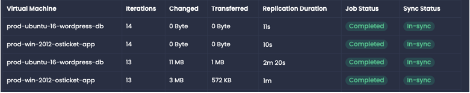
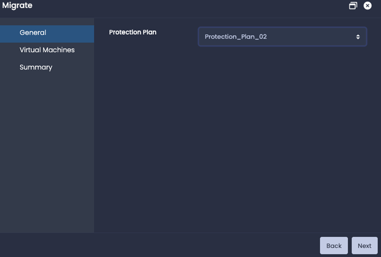
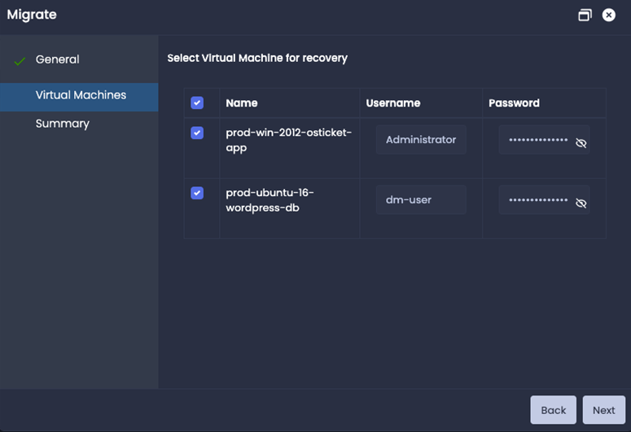
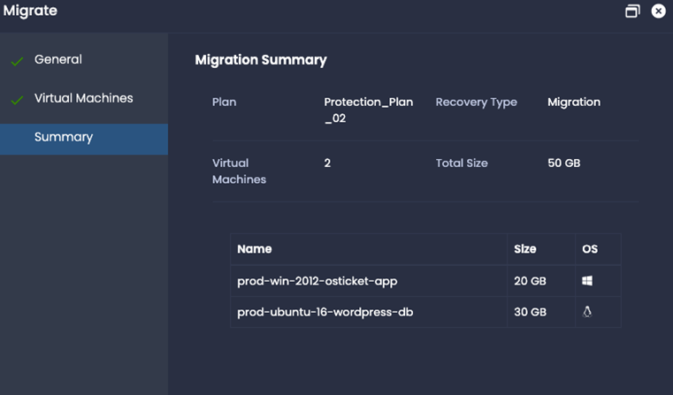

Migration
To migrate the workloads, go to Home —> Configuration —> Protection Plan on the server side. Click on Migrate and Migrate window will pop-up.
Prerequisite
In case of migration, to make sure there is no loss of data, the virtual machine(s) should be in power off state and the last replication jobs should be successfully completed with zero changed data.
General
Select the protection plan
Virtual Machines
Select the virtual machines and provide the credentials if there are pre or post scripts configured for these virtual machines.
Note: For Windows machine in AWS, credentials are mandatory.
Summary
Migration Jobs
Go to Home —> Jobs —> Recovery jobs tab to check the migration jobs status.